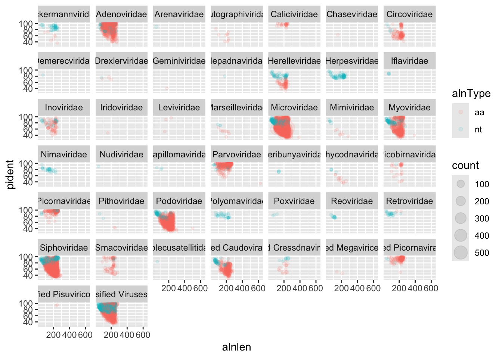
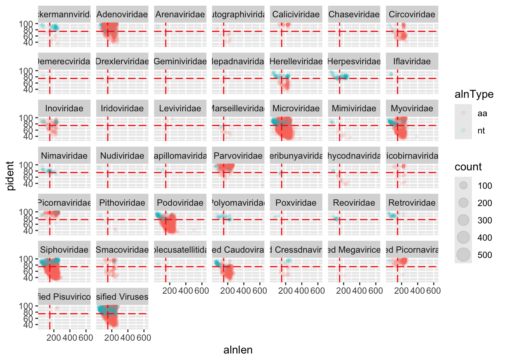
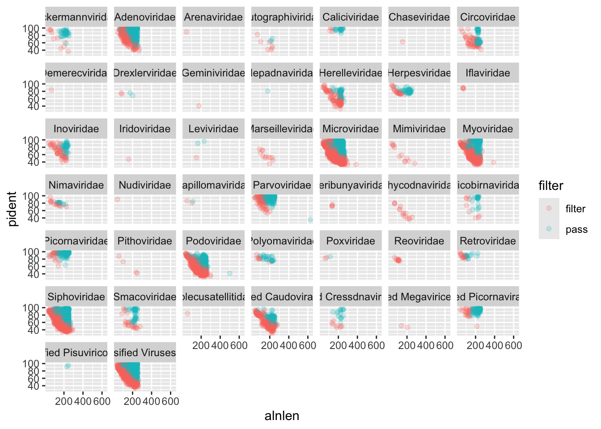
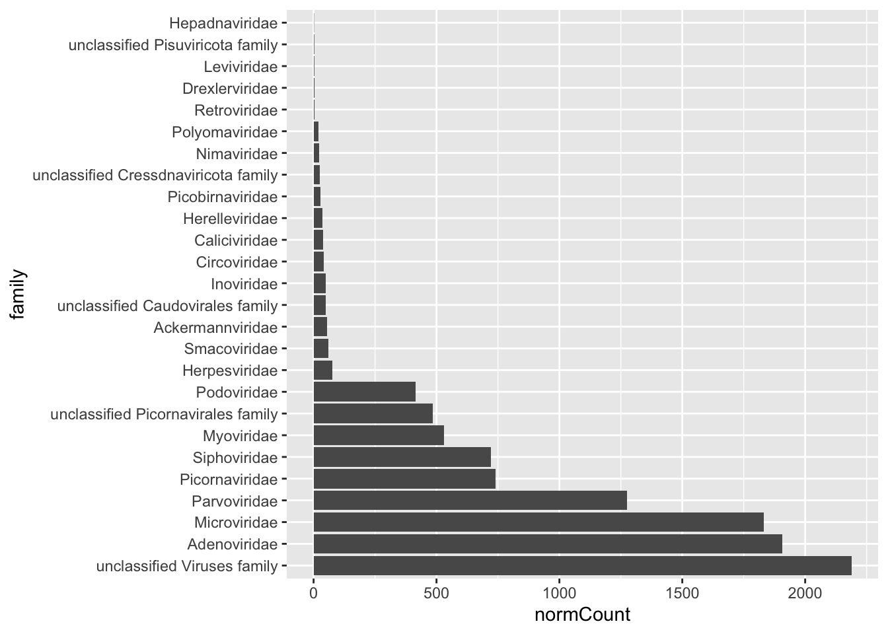
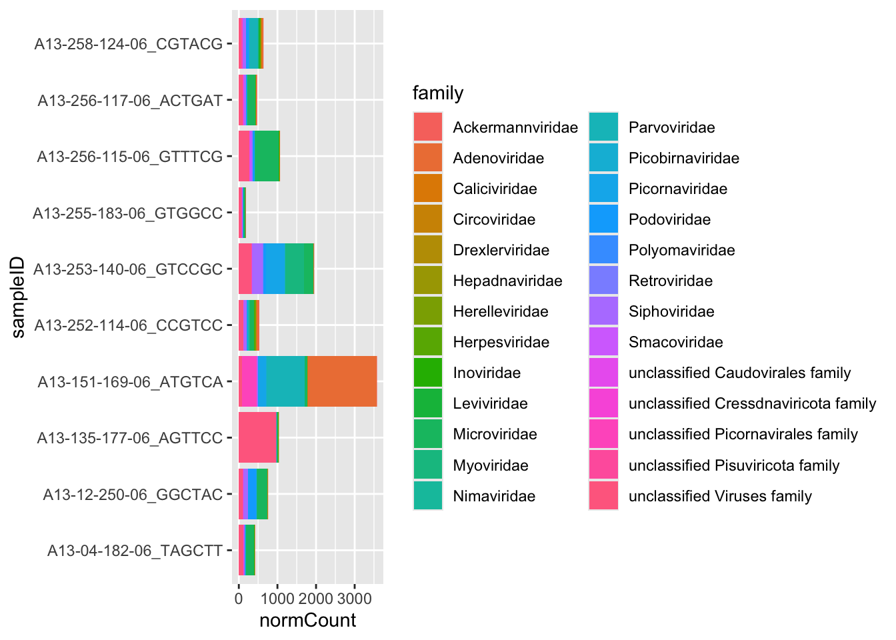
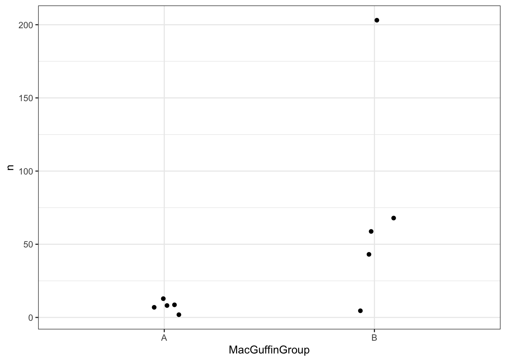
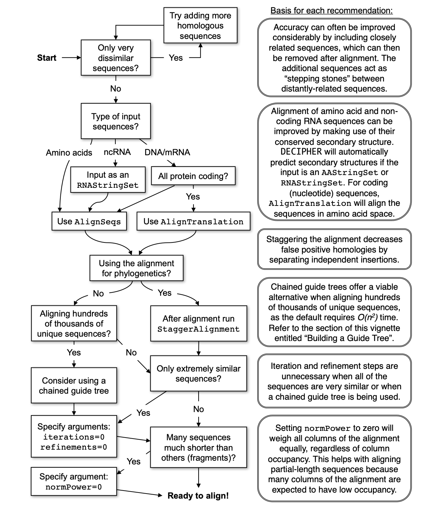
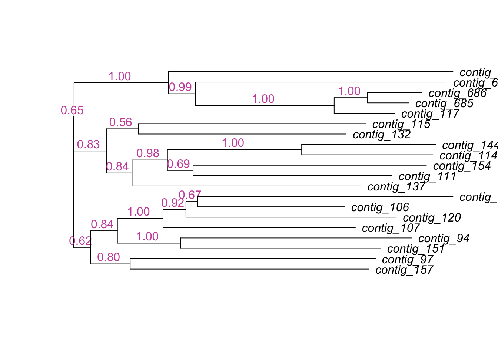

knitr::opts_knit$set(root.dir = "/Users/luischica/Desktop/uv_data") #IMPORTANT: change /Users/luischica/Desktop/Workshop_SA/data by ~/workshop_materials/untargetedViromics/uv_dataWorkshop III – Bioinformatics and Viral Genomics
Slides
module_1_lindsay_droit_20250224.pdf
Background
The tables used for this exercise are the main outputs of Hecatomb (https://github.com/shandley/hecatomb), a software aimed to increase virus discovery on complex samples (Metagenomic WGS or VLP prep WGS).
Dataset
Primarily, we will use a file called bigtable.tsv. This file has the taxonomic classification of each read that was used as input to Hecatomb. It also has the alignment statistics and the number of equal reads found for each sample.
We will also use the file called metadata.tsv. The samples in the test dataset are samples taken from deceased Macaques from the study “SIV Infection-Mediated Changes in Gastrointestinal Bacterial Microbiome and Virome Are Associated with Immunodeficiency and Prevented by Vaccination” (https://www.sciencedirect.com/science/article/pii/S1931312816300518). The metadata contains the individuals’ gender and the vaccine that was administered.
Setting
We are going to connect to the Rstudio server that is running on our machines ::: {.cell}
http://44.202.27.9:8787 #IMPORTANT: Change 44.202.27.9 by your IP
#Paste it in your browser
user: genomics
password:evomics2025:::
Also, we are going to connect to using ssh within the terminal. Then, we can go to workshop_materials and create a new directory called untargetedViromis. Then, go to that directory. Finally, we are going to download our dataset.
ssh genomics@serverIP #connect to the server
cd ~/workshop_materials/
mkdir untargetedViromics #create a new working directory
cd untargetedViromics
git clone https://github.com/luisalbertoc95/UV_data-Workshop-III-Bioinformatics-SA-2025.git
mv UV_data-Workshop-III-Bioinformatics-SA-2025 uv_data #Change the name to work with a shorter one. Analysis
Step 1: Set up a new RMarkdwon/Quarto document
Step 2: Initiate your environment
First, We are going to set our working directory for all the chunks
Optionally, if you are using a normal R script, you can use: setwd(pathToYourWorkingDirectory)
For this exercise we will use 4 packages: ggplot2, dplyr and tidyr from the tidyverse suite, but also we will need the rstatix package.
# Check and install tidyverse if needed, then load it
if (!requireNamespace("tidyverse", quietly = TRUE)) {
install.packages("tidyverse")
}
library(tidyverse)
# Check and install rstatix if needed, then load it
if (!requireNamespace("rstatix", quietly = TRUE)) {
install.packages("rstatix")
}
library(rstatix)
# Check and install DECIPHER if needed, then load it
if (!requireNamespace("DECIPHER", quietly = TRUE)) {
if (!requireNamespace("BiocManager", quietly = TRUE)) {
install.packages("BiocManager")
}
BiocManager::install("DECIPHER")
}
library(DECIPHER)Step 3: Set the location and load our input files
data <- read.delim('bigtable.tsv',header=T,sep='\t')
meta <- read.csv('metadata.tsv',header=T,sep='\t')Inspect the dataframes
head(data) seqID sampleID count normCount alnType
1 A13-258-124-06_CGTACG:1:6006 A13-258-124-06_CGTACG 1 1.012666 aa
2 A13-258-124-06_CGTACG:1:6007 A13-258-124-06_CGTACG 1 1.012666 aa
3 A13-258-124-06_CGTACG:1:6019 A13-258-124-06_CGTACG 1 1.012666 aa
4 A13-258-124-06_CGTACG:1:6020 A13-258-124-06_CGTACG 1 1.012666 aa
5 A13-258-124-06_CGTACG:1:6030 A13-258-124-06_CGTACG 1 1.012666 aa
6 A13-258-124-06_CGTACG:1:6031 A13-258-124-06_CGTACG 1 1.012666 aa
targetID evalue pident fident nident mismatches qcov tcov qstart qend
1 A0A1W5PTE0 2.240e-46 97.3 0.973 73 2 0.962 0.166 234 10
2 E0NZW5 1.941e-23 74.1 0.741 46 16 0.795 0.785 18 203
3 A0A349YS28 4.343e-17 51.9 0.519 40 37 0.991 0.193 3 233
4 A0A2N5ZDN1 3.061e-35 81.8 0.818 63 14 0.987 0.279 4 234
5 A0A1Q6JQ74 4.923e-17 56.5 0.565 39 30 0.885 0.107 15 221
6 A0A345MUW0 7.251e-24 85.0 0.850 51 9 0.933 0.163 12 191
qlen tstart tend tlen alnlen bits
1 234 372 446 452 225 167
2 234 16 77 79 186 101
3 233 155 231 399 231 83
4 234 161 237 276 231 135
5 234 422 490 643 207 83
6 193 294 353 369 180 102
targetName taxMethod kingdom
1 VP1 (Fragment) TopHit Viruses
2 Toxin-antitoxin system, toxin component, HicA family TopHit Bacteria
3 Uncharacterized protein LCA Bacteria
4 Lysine--tRNA ligase (Fragment) TopHit Bacteria
5 Phage tail tape measure protein TopHit Bacteria
6 A0A345MUW0_9VIRU Uncharacterized protein LCA Viruses
phylum class
1 Cossaviricota Quintoviricetes
2 Firmicutes Negativicutes
3 unclassified Bacteria phylum unclassified Bacteria class
4 Bacteroidetes Bacteroidia
5 Firmicutes Clostridia
6 Hofneiviricota Faserviricetes
order family
1 Piccovirales Parvoviridae
2 Selenomonadales Selenomonadaceae
3 unclassified Bacteria order unclassified Bacteria family
4 Marinilabiliales unclassified Marinilabiliales family
5 Clostridiales unclassified Clostridiales family
6 Tubulavirales Inoviridae
genus species
1 Protoparvovirus Simian bufavirus
2 Selenomonas Selenomonas sp. oral taxon 149
3 unclassified Bacteria genus unclassified Bacteria species
4 unclassified Marinilabiliales genus Marinilabiliales bacterium
5 unclassified Clostridiales genus Clostridiales bacterium 59_14
6 unclassified Inoviridae genus Inoviridae sp.
baltimoreType baltimoreGroup
1 ssDNA II
2 <NA> <NA>
3 <NA> <NA>
4 <NA> <NA>
5 <NA> <NA>
6 ssDNA IIhead(meta) sampleID vaccine sex MacGuffinGroup
1 A13-04-182-06_TAGCTT sham F B
2 A13-12-250-06_GGCTAC sham F B
3 A13-135-177-06_AGTTCC Ad_alone F A
4 A13-151-169-06_ATGTCA Ad_alone F A
5 A13-252-114-06_CCGTCC sham M A
6 A13-253-140-06_GTCCGC sham M BStep 4: Merging our metadata with our data table
The merge function with perform an inner join by default, or you can specify outer, and left- and right-outer. This shouldn’t matter if you have metadata for all of your samples.
dataMeta <- merge(data, meta, by='sampleID')Step 5: Preliminary bigtable plots
First, we will plot the alignment length against identity, and facet by viral family. We show the different alignment types by color, and we can scale the point size by the cluster number. The alpha=0.1 will help us to set it to 10% opacity and the points will overlap a lot at this scale.
Before making our plot, we will filter our dataMeta in order to remove all non viral taxonomic annotation. The function filter() will take all the hits to the word Viruses in our Kingdom column ::: {.cell}
viruses <- dataMeta %>%
filter(kingdom=="Viruses"):::
Now we can make our first plot
ggplot(viruses) +
geom_point(
aes(x=alnlen,y=pident,color=alnType,size=count),
alpha=0.1) +
facet_wrap(~family)
We can immediately see that a handful of viral families make up a majority of the viral hits. You can use these plots to help guide filtering strategies. We can divide the alignments into ‘quadrants’ by adding alignment length and percent identity thresholds, for instance alignment length of 150 and percent identity of 75.
We can also add some threshold lines to divide our plot into quadrants. This quadrants will be useful to see how much can we trust in each alignment.
ggplot(viruses) +
geom_point(
aes(x=alnlen,y=pident,color=alnType,size=count),
alpha=0.1) +
facet_wrap(~family) +
geom_vline(xintercept=150,colour='red',linetype='longdash') +
geom_hline(yintercept=75,colour='red',linetype='longdash')
We can see that for Adenoviridae and Parvoviridae the majority of hits occupy the top two quadrants, and we can be reasonably confident about these alignments. For Podoviridae and Circoviridae, the majority of hits occupy the bottom two quadrants. This could indicate that the viruses are only distantly related to the reference genomes in these families.
Task: plot the Bacterial hits faceted by phylum
Step 6: Filtering Strategies
Hecatomb is not intended to be a black box of predetermined filtering cutoffs that returns an immutable table of hits. Instead, it delivers as much information as possible to empower the user to decide which hits they want to keep and which hits to purge. Let’s take our raw viral hits data frame viruses and filter them to only keep the ones we are confident about.
The e-value is one of the most common metrics to use for filtering alignments. Let’s see what hits would be removed if we used a fairly stringent cutoff of 1e-20. We will create a new data set that contains only the hits remaining after applying the p-value threshold.
We are going to see two strategies for filtering our table. In the first strategy, we will add an additional column to our data set. This column will have 2 possible values: “filter” and “pass”. whether a read is tagged as filter or pass will depend of the the threshold added in the function ifelse()
virusesFiltered <- viruses %>%
mutate(filter=ifelse(evalue<1e-20,'pass','filter'))We can plot our new table
ggplot(virusesFiltered) +
geom_point(
aes(x=alnlen,y=pident,color=filter),
alpha=0.2) +
facet_wrap(~family)
The red sequences are destined to be removed, while the blue sequences will be kept. Some viral families will be removed altogether, which is probably a good thing if they only have low quality hits.
The second strategy, is a more straightforward method. We only need to use the function filter() and the desired e-value threshold. No additional column will be added.
virusesFiltered <- viruses %>%
filter(evalue<1e-20)Going back to the quadrant concept, you might only want to keep sequences above a certain length and percent identity:
virusesFiltered = virusesFiltered %>%
filter(alnlen>150 & pident>75)Now, our filtered table has an alignment filter, an identity % filter and our previous p-value filter.
There are many alignment metrics included in the bigtable for you to choose from.
Task: Filter your raw viral hits to only keep protein hits with an evalue < 1e-10
Step 7: Analyse taxon counts
- Make Per family plots First, we will sum the normalized count of each read to a family level using the columns sampleID and family
viralFamCounts <- virusesFiltered %>%
group_by(family) %>%
summarise(normCount=sum(normCount)) %>%
arrange(desc(normCount))
viralFamCounts$family <- factor(viralFamCounts$family,levels=viralFamCounts$family)
head(viralFamCounts)# A tibble: 6 × 2
family normCount
<fct> <dbl>
1 unclassified Viruses family 2188.
2 Adenoviridae 1906.
3 Microviridae 1831.
4 Parvoviridae 1274.
5 Picornaviridae 741.
6 Siphoviridae 720.After having our new dataframe with the counts per Family, we can create our abundance plot.
ggplot(viralFamCounts) +
geom_bar(aes(x=family,y=normCount),stat='identity') +
coord_flip() 
- Discriminate our family plots by sample ID
The previous plot are a good way to understand the overall abundance of each family in all our samples. However, with that plot is impossible to differentiate between samples and therefore, between different treatments. We can sum our normalized counts in a similar way we did before. Now we are going to add the variable “sampleID” to the function group_by()
viralFamCounts <- virusesFiltered %>%
group_by(sampleID,family) %>%
summarise(normCount=sum(normCount)) %>%
arrange(desc(normCount))
head(viralFamCounts)# A tibble: 6 × 3
# Groups: sampleID [4]
sampleID family normCount
<chr> <chr> <dbl>
1 A13-151-169-06_ATGTCA Adenoviridae 1777.
2 A13-151-169-06_ATGTCA Parvoviridae 993.
3 A13-135-177-06_AGTTCC unclassified Viruses family 956.
4 A13-256-115-06_GTTTCG Microviridae 620.
5 A13-253-140-06_GTCCGC Myoviridae 490.
6 A13-253-140-06_GTCCGC Picornaviridae 486.and then, make the new plot, filling by family
ggplot(viralFamCounts) +
geom_bar(aes(x=sampleID,y=normCount, fill =family ),stat='identity') +
coord_flip() 
Task: Make a stacked bar chart of the viral families for the Male and Female monkeys
- Visualizing groups We have a few viral families that are very prominent in our samples. For the purposes of the tutorial we have a completely made up sample group category called MacGuffinGroup. Let’s see if there is a difference in viral loads according to our MacGuffinGroup groups. Collect sample counts for Microviridae. Include the metadata group in group_by() so you can use it in the plot.
For our first plot we are going to focus exclusively in Microviridae family
podoCounts <- virusesFiltered %>%
group_by(family,sampleID,MacGuffinGroup) %>%
filter(family=='Podoviridae') %>%
summarise(n = sum(normCount))Then, we can plot using jitter plots, box plots or violin plots
ggplot(podoCounts) +
geom_jitter(aes(x=MacGuffinGroup,y=n),width = 0.1) +
theme_bw()
Step 8: Statistical tests
In Step 6, we compared the viral counts between the two sample groups for Podoviridae, and it appeared as though group B had more viral sequence hits on average than group A. We can compare the normalized counts for these two groups to see if they’re significantly different.
- Student’s T-test
Let’s check out the data frame we made earlier that we’ll be using for the test
head(podoCounts)# A tibble: 6 × 4
# Groups: family, sampleID [6]
family sampleID MacGuffinGroup n
<chr> <chr> <chr> <dbl>
1 Podoviridae A13-04-182-06_TAGCTT B 4.56
2 Podoviridae A13-12-250-06_GGCTAC B 203.
3 Podoviridae A13-135-177-06_AGTTCC A 1.91
4 Podoviridae A13-151-169-06_ATGTCA A 12.7
5 Podoviridae A13-252-114-06_CCGTCC A 8.22
6 Podoviridae A13-253-140-06_GTCCGC B 67.9 We will use the base-r function t.test(), which takes two vectors. One vector has the group A counts and the other has the group B counts. We can use the filter() and pull() functions within the t.test() function. The function pull will take the column n, which has our abundance values.
t.test(
podoCounts %>%
filter(MacGuffinGroup=='A') %>%
pull(n),
podoCounts %>%
filter(MacGuffinGroup=='B') %>%
pull(n),
alternative='two.sided',
paired=F,
var.equal=T)
Two Sample t-test
data: podoCounts %>% filter(MacGuffinGroup == "A") %>% pull(n) and podoCounts %>% filter(MacGuffinGroup == "B") %>% pull(n)
t = -2.0096, df = 8, p-value = 0.07933
alternative hypothesis: true difference in means is not equal to 0
95 percent confidence interval:
-145.561036 9.996944
sample estimates:
mean of x mean of y
7.701613 75.483659 - Wilcoxon test
The Wilcoxon test is analogue to the t-test, however is used when our values do not follow a normal distribution. The syntax for this test is very similar to the t-test
wilcox.test(
podoCounts %>%
filter(MacGuffinGroup=='A') %>%
pull(n),
podoCounts %>%
filter(MacGuffinGroup=='B') %>%
pull(n),
alternative='t',
paired=F)
Wilcoxon rank sum exact test
data: podoCounts %>% filter(MacGuffinGroup == "A") %>% pull(n) and podoCounts %>% filter(MacGuffinGroup == "B") %>% pull(n)
W = 4, p-value = 0.09524
alternative hypothesis: true location shift is not equal to 0In some cases, the viral loads have minor importance for answering a research question, instead we might be just interested in comparing the presence or absence of viruses. For this you could use a Fisher’s exact test. To perform this test you need to assign a presence ‘1’ or absence ‘0’ for each viral family/genus/etc for each sample.
First we are going to apply and even more stringent filter to be sure about the alignments ::: {.cell}
virusesStringent <- viruses %>%
filter(evalue<1e-30,alnlen>150,pident>75,alnType=='aa') :::
Then we will assign anything with any hits as ‘present’ for that an specific viral family (It can be done for all of them). For this example we are going to use Myoviridae.
Our chunk has two lines. The first one will extract the counts for Myoviridae and the second will merge our new table with our metadata file
myovirPresAbs <- virusesStringent %>%
filter(family=='Myoviridae') %>%
group_by(sampleID) %>%
summarise(n=sum(normCount)) %>%
mutate(present=ifelse(n>0,1,0))
myovirPresAbs <- merge(myovirPresAbs,meta,by='sampleID',all=T)If we visualise our “myovirPresAbs” table, we will see some values missing or NA. Those are the samples in which no presence of Myoviridae was found. We can convert the NAs to zeros.
myovirPresAbs[is.na(myovirPresAbs)] = 0To do the Fisher’s exact test we need to specify a 2x2 grid; The first column will be the number with Myoviridae for each group. The second column will be the numbers without for each group.
# matrix rows
mtxGroupA = c(
myovirPresAbs %>%
filter(MacGuffinGroup=='A',present==1) %>%
summarise(n=n()) %>%
pull(n),
myovirPresAbs %>%
filter(MacGuffinGroup=='A',present==0) %>%
summarise(n=n()) %>%
pull(n))
mtxGroupB = c(
myovirPresAbs %>%
filter(MacGuffinGroup=='B',present==1) %>%
summarise(n=n()) %>%
pull(n),
myovirPresAbs %>%
filter(MacGuffinGroup=='B',present==0) %>%
summarise(n=n()) %>%
pull(n))
# create the 2x2 matrix
myovirFishMtx = matrix(c(mtxGroupA,mtxGroupB),nrow = 2)
# this bit is not necessary, but lets add row and col names to illustrate the matrix layout
colnames(myovirFishMtx) = c('GroupA','GroupB')
row.names(myovirFishMtx) = c('present','absent')
# view
myovirFishMtx GroupA GroupB
present 1 5
absent 4 0We can run our t-test using our new matrix as input
fisher.test(myovirFishMtx)
Fisher's Exact Test for Count Data
data: myovirFishMtx
p-value = 0.04762
alternative hypothesis: true odds ratio is not equal to 1
95 percent confidence interval:
0.000000 0.975779
sample estimates:
odds ratio
0 Step 9: Contig based analysis
Contig analysis is a very important approach when identifying viruses from a metagenomic or VLP prep sample. Because of the length of the contigs, new genomic features can be identified and used for generating a taxonomic classification, functional analysis and more.
- Fist, we will load our taxonomy table generated from hecatomb. This table relates every contig with their best hit in the data base.
For the purpose of this exercise we will filter our table for contigs classified at family level as Caudovirales. and with a sequence length between 2000 and 3000 base pairs.
contig_data <- read.delim('MMseqsTax.txt',header=T,sep='\t')
caudovirales_data <- contig_data %>%
filter(Order == "Caudovirales" & qlen > 2000 & qlen < 3000) %>%
select(contigID) - We will load our fasta file generated after the assembly using the package Biostrings, included in the package DECIPHER. We can also use the package [] for selecting our target contigs from the fasta file
contigs <- readDNAStringSet("assembly.fasta", format="fasta")
caudo_contigs <- contigs[caudovirales_data$contigID] - We can use our set of contigs to make a multiple sequence alignment (MSA) with the final purpose of generating a phylogeny tree.
The steps to make our MSA are going to be based on the decision diagram from the DEIPHER package
 Steps:
- Create the multiple sequences alignement
- Remove ambiguous regions from the alignment
- Create the phylogenetic tree
- Plot the dendrogram
#A
aln_contig <- AlignSeqs(caudo_contigs)Determining distance matrix based on shared 10-mers:
================================================================================
Time difference of 0.04 secs
Clustering into groups by similarity:
================================================================================
Time difference of 0 secs
Aligning Sequences:
================================================================================
Time difference of 2.76 secs
Iteration 1 of 2:
Determining distance matrix based on alignment:
================================================================================
Time difference of 0 secs
Reclustering into groups by similarity:
================================================================================
Time difference of 0 secs
Realigning Sequences:
================================================================================
Time difference of 1.98 secs
Iteration 2 of 2:
Determining distance matrix based on alignment:
================================================================================
Time difference of 0 secs
Reclustering into groups by similarity:
================================================================================
Time difference of 0 secs
Realigning Sequences:
================================================================================
Time difference of 1.07 secs
Refining the alignment:
================================================================================
Time difference of 3.2 secs#B
stagger_aln_contig<- StaggerAlignment(aln_contig)Calculating distance matrix:
================================================================================
Time difference of 0 secs
Constructing neighbor-joining tree:
================================================================================
Time difference of 0 secs
Staggering insertions and deletions:
================================================================================
Time difference of 0.67 secsBrowseSeqs(stagger_aln_contig, highlight=1)
#C
tree <- TreeLine(stagger_aln_contig, reconstruct=TRUE, maxTime=0.05)Optimizing model parameters:
JC69 -ln(L) = 62850, AICc = 125775, BIC = 125989
JC69+G4 -ln(L) = 62814, AICc = 125705, BIC = 125924
K80 -ln(L) = 62843, AICc = 125763, BIC = 125982
K80+G4 -ln(L) = 62806, AICc = 125692, BIC = 125916
F81 -ln(L) = 62406, AICc = 124893, BIC = 125123
F81+G4 -ln(L) = 62374, AICc = 124832, BIC = 125068
HKY85 -ln(L) = 62402, AICc = 124887, BIC = 125123
HKY85+G4 -ln(L) = 62372, AICc = 124830, BIC = 125072
T92 -ln(L) = 62416, AICc = 124911, BIC = 125135
T92+G4 -ln(L) = 62384, AICc = 124850, BIC = 125080
TN93 -ln(L) = 62401, AICc = 124888, BIC = 125130
TN93+G4 -ln(L) = 62369, AICc = 124826, BIC = 125074
SYM -ln(L) = 62755, AICc = 125596, BIC = 125838
SYM+G4 -ln(L) = 62706, AICc = 125499, BIC = 125747
GTR -ln(L) = 62386, AICc = 124863, BIC = 125122
GTR+G4 -ln(L) = 62352, AICc = 124798, BIC = 125063
The selected model was: GTR+G4
PHASE 1 OF 3: INITIAL TREES
1/3. Optimizing initial tree #1 of 10 to 100:
-ln(L) = 62350.7 (-0.002%), 2 Climbs
1/3. Optimizing initial tree #2 of 10 to 100:
-ln(L) = 62346.9 (-0.006%), 3 Climbs
1/3. Optimizing initial tree #3 of 10 to 100:
-ln(L) = 62349.4 (+0.004%), 6 Climbs
PHASE 2 OF 3: REGROW GENERATION 1 OF 10 TO 20
2/3. Optimizing regrown tree #1 of 10 to 100:
-ln(L) = 62345.2 (-0.003%), 1 Climb
2/3. Optimizing regrown tree #2 of 11 to 100:
-ln(L) = 62346.1 (+0.001%), 2 Climbs
2/3. Optimizing regrown tree #3 of 11 to 100:
-ln(L) = 62353.4 (+0.013%), 0 Climbs
2/3. Optimizing regrown tree #4 of 11 to 100:
-ln(L) = 62345.5 (~0.000%), 3 Climbs
2/3. Optimizing regrown tree #5 of 11 to 100:
-ln(L) = 62345.4 (~0.000%), 2 Climbs
2/3. Optimizing regrown tree #6 of 11 to 100:
-ln(L) = 62346.4 (+0.002%), 3 Climbs
2/3. Optimizing regrown tree #7 of 11 to 100:
-ln(L) = 62345.2 (~0.000%), 2 Climbs
2/3. Optimizing regrown tree #8 of 11 to 100:
-ln(L) = 62347.9 (+0.004%), 1 Climb
2/3. Optimizing regrown tree #9 of 11 to 100:
-ln(L) = 62347.6 (+0.004%), 4 Climbs
PHASE 3 OF 3: SHAKEN TREES
Grafting 1 tree to the best tree:
-ln(L) = 62344.1 (-0.002%), 1 Graft of 3
3/3. Optimizing shaken tree #1 of 3 to 1000:
-ln(L) = 62349.9 (+0.009%), 5 Climbs
3/3. Optimizing shaken tree #2 of 3 to 1000:
-ln(L) = 62361.3 (+0.028%), 4 Climbs
3/3. Optimizing shaken tree #3 of 3 to 1000:
-ln(L) = 62371.9 (+0.045%), 3 Climbs
Grafting 3 trees to the best tree:
-ln(L) = 62344.1 (0.000%), 0 Grafts of 10
Model parameters:
Frequency(A) = 0.284
Frequency(C) = 0.204
Frequency(G) = 0.199
Frequency(T) = 0.313
Rate A <-> C = 1.125
Rate A <-> G = 1.336
Rate A <-> T = 1.040
Rate C <-> G = 1.437
Rate C <-> T = 1.124
Rate G <-> T = 1.000
Alpha = 10.863
Time difference of 223.28 secs#D
plot(dendrapply(tree,
function(x) {
s <- attr(x, "probability")
if (!is.null(s) && !is.na(s)) {
s <- formatC(as.numeric(s), digits=2, format="f")
attr(x, "edgetext") <- paste(s, "\n")
}
attr(x, "edgePar") <- list(p.col=NA, p.lwd=1e-5, t.col="#CC55AA")
if (is.leaf(x))
attr(x, "nodePar") <- list(lab.font=3, pch=NA)
x
}),
horiz=TRUE,yaxt='n')
Additional documentation: command-line code for running a untargeted viromics analysis.
This document outlines a step-by-step workflow for predicting viruses in metagenomic samples using a combination of binning, phage prediction, and quality assessment tools. Conda/Mamba installation instructions are provided for each tool.
Setting variables and creating directories
ASSEMBLY="~/workshop_materials/untargetedViromics/uv_data/assembly.fasta"
mkdir ~/workshop_materials/untargetedViromics/runningTools
PHAGEPRED_WD="~/workshop_materials/untargetedViromics/runningTools/phagePrediction"
QUALPRED_WD="~/workshop_materials/untargetedViromics/runningTools/Qual"
CPUS_PER_TASK=4
cd ~/workshop_materials/untargetedViromics/runningToolsBinning using Reneo
Do not run
Description
Reneo is a binning tool that groups contigs into bins (putative genomes) based on coverage, sequence composition, and a flow decomposition algorithm that allows us to get complete genomes from our contigs. This step is important for reducing complexity and isolating viral contigs.
Conda Installation
conda create -n reneo -c bioconda reneo
conda activate reneoCommand
reneo run --input "${ASSEMBLY}" \
--reads "${READS}" \
--minlength 1000 \
--output "${RENEO_OUT}" \
--threads ${CPUS_PER_TASK}
echo "reneo done"Phage Prediction using Jaeger, geNomad, and DeepVirFinder
Description
Jaeger
Methodology: Jaeger uses a machine learning model based on convolutional neural networks (CNNs) to predict phage sequences. It analyzes genomic features such as k-mer frequencies, GC content, and sequence length. Strengths: High sensitivity for detecting novel phages due to its ability to learn complex patterns in viral sequences. Can process both reads and contigs, making it versatile for different types of metagenomic data. Performs well on low-abundance sequences and fragmented genomes.
geNomad
Methodology: geNomad combines homology-based searches (e.g., against protein domain databases like Pfam) with neural network models to classify sequences as viral, plasmid, or chromosomal. The homology component identifies conserved viral and plasmid proteins. The machine learning component uses k-mer frequencies and genomic features to refine predictions. Strengths: High accuracy in distinguishing between viruses, plasmids, and host sequences. Effective for novel sequences due to its hybrid approach. Provides detailed annotations, including viral taxonomy and functional genes.
DeepVirFinder
Methodology: DeepVirFinder employs a deep learning model based on convolutional neural networks (CNNs) to predict viral sequences. It uses k-mer frequencies and sequence composition as input features. Strengths: High sensitivity for detecting novel viruses, even in the absence of close homologs in reference databases. Works well on short reads and fragmented contigs. Can be applied to both DNA and RNA viruses.
VirSorter2
Methodology: VirSorter2 combines homology-based searches (using curated viral protein databases) with machine learning models to identify phage sequences. It uses genomic features such as gene density, strand shifts, and viral hallmark genes. Strengths: High accuracy in detecting phages and viral contigs in metagenomic assemblies. Can classify sequences into lytic, lysogenic, or eukaryotic viruses. Includes a curated database of viral proteins for improved homology-based detection.
Conda Installation
## Jaeger
mamba create -n jaeger -c bioconda jaeger
conda activate jaeger
## geNomad **Do not run**
mamba create -n genomad -c bioconda genomad
conda activate genomad
## virsorter **Do not run**
mamba create -n vs2 -c conda-forge -c bioconda virsorter=2
virsorter setup -d db -j 4
## DeepVirFinder
mamba create --name dvf python=3.6 numpy theano=1.0.3 keras=2.2.4 scikit-learn Biopython h5py=2.10.0
git clone https://github.com/jessieren/DeepVirFinder
cd DeepVirFinderCommands
mkdir -p "${PHAGEPRED_WD}"
## DeepVirFinder
conda activate dvf
python dvf.py -i "${ASSEMBLY}" \
-o "${PHAGEPRED_WD}/deepvirfinder" \
-l 1000 \
-c ${CPUS_PER_TASK}
echo "deepvirfinder done"
## Jaeger
conda activate jaeger
Jaeger -i "${ASSEMBLY}" \
-o "${PHAGEPRED_WD}/jaeger" \
-s 2.5 \
--fsize 1000 \
--stride 1000
echo "jaeger done"
## geNomad **Do not run**
conda activate genomad
genomad end-to-end --min-score 0.6 \
--cleanup \
--threads ${CPUS_PER_TASK} \
"${ASSEMBLY}" \
"${PHAGEPRED_WD}/geNomad" \
"${GENOMAD_DB}"
echo "genomad done"
## virsorter **Do not run**
virsorter run -w "${PHAGEPRED_WD}/virsorter" \
-i "${ASSEMBLY}" \
--include-groups "dsDNAphage,ssDNA, RNA" \
-j 4 \
--min-length 1000 \
--min-score 0.8 \
--provirus-off \
allIntegrative workflows for phage prediction, taxonomic classification, lifestyle prediction, and host prediction
Conda Installation
mamba create -n phabox2 phabox=2.1.10 -c conda-forge -c bioconda -y
## Downloading the database using wget
cd ~/workshop_materials/untargetedViromics/runningTools
wget https://github.com/KennthShang/PhaBOX/releases/download/v2/phabox_db_v2.zip
unzip phabox_db_v2.zip > /dev/nullCommand
conda activate phabox2
phabox2 --task end_to_end --dbdir phabox_db_v2 \
--outpth ${PHAGEPRED_WD}/Phabox_OUT \
--contigs ${ASSEMBLY} \
--len 1000 \
--threads ${CPUS_PER_TASK}
echo "phabox2 done"Step 4: Quality Assessment using CheckV
Description
CheckV is a tool designed to assess the quality and completeness of viral genomes recovered from metagenomes. It employs a multi-step approach: Completeness Estimation: Uses a database of high-quality reference viral genomes to identify conserved, single-copy genes (e.g., capsid proteins, terminases, integrases) that serve as markers for viral completeness. Estimates completeness by detecting the presence/absence of these hallmark genes and their collinearity (gene order conservation). Contamination Detection: Identifies host contamination (e.g., bacterial or eukaryotic genes) using a database of non-viral sequences. Flags sequences with atypical GC content, codon usage, or gene content for further scrutiny.
Conda Installation
mamba create -n checkv -c conda-forge -c bioconda checkv
conda activate checkv
checkv download_database ./Command
mkdir -p "${QUALPRED_WD}"
checkv end_to_end "${ASSEMBLY}" \
"${QUALPRED_WD}" \
-d checkv-db-v1.5 \
-t ${CPUS_PER_TASK}
echo "checkV done"Phold for Phage Annotation
Do not Run
Description
Phold is a protein structure prediction and annotation tool designed specifically for bacteriophages. It combines homology-based searches with protein language models to annotate phage genomes. Annotation is performed by aligning the predicted structures to a database of structures usinf foldseek.
Conda Installation
mamba create -n pholdENV -c bioconda phold
conda activate pholdENV
phold install #Installs the databasesCommand
`{.bash} phold run -i "${ASSEMBLY}" \ -o "${PHAGEPRED_WD}/phold" \ -d "${PHOLD_DB}" \ -t ${CPUS_PER_TASK} --cpu echo "phold done"